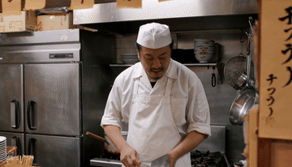
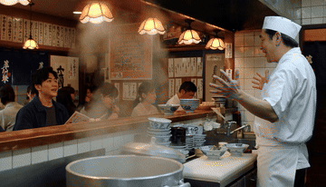
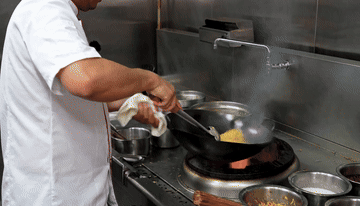
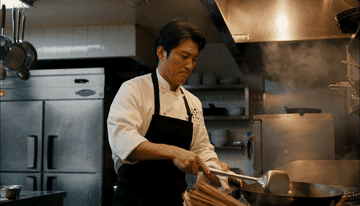
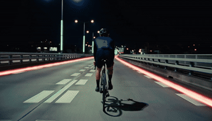
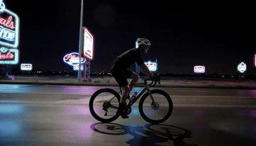
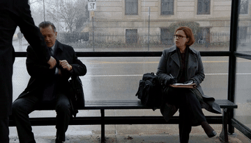
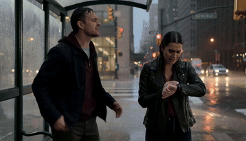

RAW vs prompt-expanded video
Each pair uses the same scenario and seed. Homepage demos are the strongest PE-win cases from the MiniMax-H3 15s base set (dialogue, bilingual kitchen, wok action, neon cyclist).
Tokyo ramen bilingual dialogue


Wok toss action sync


Neon-highway cyclist


Rainy bus-stop dialogue

